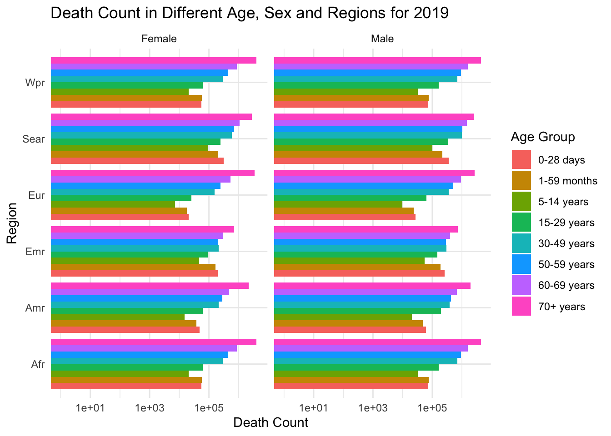

This dataset is collected and published by the World Health Organization. WHO collects time series of death registration data from as early as the 1950s for around 100 countries. This specific table publishes annual period life tables for years 2000-2019.
The dataset can be downloaded as .cvs file and excel file. We chose the .cvs format for easier importing. It has 9310 rows and 34 columns. Among all Indicators in column 2, we are only interested in life expectancy and death rate, so we will only keep rows of these two indicators (ex - expectation of life at age x and nMx: age-specific death rate between ages x and x+n) and drop others. Looking at the columns, there are many duplicated items, such as value and the corresponding value code, and some redundant items such as variable type. Hence, we will only keep the following informative columns: Indicator, Location, Period (year), Dim1 (sex), Dim2 (age group), FactValueNumeric for analysis purpose. After the data cleaning, our dataset has 2660 rows and 6 rows.
Indicator contains two values: ex - expectation of life at age x and nMx: age-specific death rate between ages x and x+n, which are the indicators we are interested in analyzing. Location contains Global, Africa, Americans, Eastern Mediterranean, Europe, South-East Asia, and Western Pacific. Period stores year of the observation. Dim1 is sex, which contains Male and Female. Dim2 represent age groups, which has value from <1 year to 85+ years, with the interval of 5. FactValueNumeric is the value for indicators, which is in numeric format.
2.1.2 Data Source 2: GHE: Leading causes of death
WHO’s Global Health Estimates (GHE) provide the latest available data on causes of death globally, by region and country, and by age, sex and income group. They provide key insights on mortality and morbidity trends to support informed decision-making on health policy and resource allocation.
These estimates are produced using data from multiple sources, including national vital registration data, latest estimates from WHO technical programmes, United Nations partners and inter-agency groups, as well as the Global Burden of Disease and other scientific studies. Before publishing, the GHE are reviewed by WHO Member States through consultation with national focal points and WHO country and regional offices.
The update intervals of this database are not strictly uniform. The specific time panels it includes are: 2000, 2010, 2015, and 2019. It can be exported directly in xlsx format from the website. The main feature columns include: Age Group, Sex Group, Time, Region, and Cause Category. This table records the number of deaths attributed to various causes. It consists of 4 (# of time period) \(\times\) 6 (# of regions) sheets, each containing a 215-row (# of causes) \(\times\) 16-column (# of gender-age subgroups) dataset table.
This dataset is an aggregate table of death counts, meaning that the recorded data is aggregated across different categorical dimensions rather than representing the raw records of individual deaths. This indicates that there is no single variable in this table, or in other words, the only numeric variable is the death count; all others are categorical variables. This implies that it will assist us in grouping data by different categories, facilitating the exploration of a comprehensible and insightful analysis of global health disparities, and allowing for targeted interventions in key areas.
Please note that the divisions of age, time, gender and region, which are categorical variables with the same meanings, are consistent across both data tables. This ensures that we can obtain research outcomes based on a uniform standard.
2.2Research plan
2.2.1 Data Source 1:
How has the death rate and life expectancy changed over time, globally and regionally?
For the global overall trend, we will aggregate the data for each year and make a bar chart showing the death rate and life expectancy at birth from 2000 to 2019.
Does death rate and life expectancy differ by sex?
We will aggregate the data for each year by sex and make a side-by-side barchart to compare indicators for male and female, exploring whether there is a gap and whether the gap changes over time.
We can also create mosaic plots to explore the interactions effects between age, sex, and target indicators.
Do more developed regions have lower death rate, higher life expectancy and larger changes than undeveloped regions?
We will aggregate the data for each region and make side-by-side bar charts to compare each region.
Do more developed regions have a more left skewed distribution of death rate on age?
First we aggregate the data for each region, and make a histogram of death rate on age groups.
Since more developed regions will have more developed health care system, we expect a lower infant mortality and higher life expectancy at birth. So the death rate will be low when age is young, and higher when age is large.
2.2.2 Data Source 2: GHE: Leading causes of death
Our research on data source 2 involves the following parts:
2.2.2.1a. Temporal Analysis
For this part, we will examine temporal trends in causes of death over the past decade and identify regions or demographic groups experiencing significant changes in mortality rates.
Questions to be answered: Does the composition of causes of death change over time?
Methods to be implemented: line chart, Cleveland dot plot.
2.2.2.2 b. Regional, Age and Gender Disparities
Analyze causes of death by continent, age groups and gender groups, emphasizing descriptive statistics to highlight regional variations. We will explore the influence of socio-economic factors on mortality rates and highlight any discernible patterns or disparities in mortality rates.
Questions to be answered: What causes death globally and regionally?How do the causes of death differ and appear to be similar across regions, and is this associated with development level? Are there any interaction effects between variables such as age and sex affect the causes of death?
Methods to be implemented: stacked bar chart for different categories, faceted geographic graphs, PCA analysis with biplot, Interaction effect analysis with Mosaic plot.
By employing EDA and simple statistical tests, this research aims to offer a comprehensible and insightful analysis of global health disparities. The findings from this study can inform targeted public health strategies and contribute to ongoing efforts to improve health outcomes on a global scale.
2.3 Missing values analysis
Code
library(readxl)library(tidyr)library(dplyr)
Attaching package: 'dplyr'
The following objects are masked from 'package:stats':
filter, lag
The following objects are masked from 'package:base':
intersect, setdiff, setequal, union
Code
library(ggplot2)
2.3.1 Data Source 1:
Code
data <-read.csv('dataset1.csv')#Dimensionprint("Dimension of data")
Looking at the raw data, we can see that columns associated with Dim3, DataSourceDimValueCode, DataSource, FactValueNumericPrefix, FactValueUoM, FactValueNumericLowPrefix, FactValueNumericLow, FactValueNumericHighPrefix, FactValueNumericHigh are completely missing. This is because we only have two dimension categorical variables: sex and age group, and FactValueNumeric bears sufficient information for the indicator value. Therefore, we will remove those completely missing columns and one of the duplicated columns such as value/ValueCode and location/LocationCode.
Code
# Data Cleaningdata <- data[data$Indicator %in%c('nMx - age-specific death rate between ages x and x+n','ex - expectation of life at age x'), ]data <- data[ , c('Indicator', 'Location', 'Period', 'Dim1', 'Dim2', 'FactValueNumeric')]# Dimensionprint("Dimension of data")
[1] "Dimension of data"
Code
print(dim(data))
[1] 2660 6
Code
# Check missing valuesmissing_values <-sum(is.na(data))print(paste("Number of missing values: ", missing_values))
[1] "Number of missing values: 0"
After data cleaning, there is no missing value in this dataset, and we can further show this in an pie chart.
Code
# Plot to show missing_dummy <-as.numeric(!is.na(data))# Calculate the percentage of present and missing valuespresent_perc <-sum(missing_dummy) /length(missing_dummy) *100missing_perc <-100- present_perc# Create a pie chartpie_data <-c(present_perc, missing_perc)pie_labels <-c("Present", "Missing")label_perc <-sprintf("%1.1f%%", pie_data)labels_combined <-paste(pie_labels, "\n", label_perc)# Create a pie chart with labelspie(pie_data, labels = labels_combined,col =c("#00AFBB", "#E7B800"),main ="Data Completeness",cex.main =0.8)
2.3.2 Data Source 2: GHE: Leading causes of death
There are four levels of variables on cause of death in our dataset. For example, the first level of causes includes three: (1) Communicable, maternal, perinatal and nutritional conditions, (2) Noncommunicable diseases, and (3) Injuries. The first-level causes can be expanded into multiple secondary causes. For example, Communicable, maternal, perinatal and nutritional conditions includes Infectious and parasitic diseases, Respiratory Infectious, and so on. By analogy, secondary causes include multiple 3rd-level causes, and 3rd-level causes include 4th-level causes, which are likely to be very rare fatal diseases.
Based on this categorization, it can be assumed that the number of deaths due to the 1st-level causes is unlikely to be zero, as this is a very broad cause of death, with many categories underneath it. However, for a given 4th-level cause, there are likely to be multiple values of 0. For example, the number of deaths due to Trachoma is zero over the time period 2000 to 2019, and even if the range extends to global.
Subject to the availability of data, when the number of deaths under a particular category is zero, it may be due to the fact that the official data do not capture this category of deaths, or it may be that there are indeed no deaths due to such causes. Here, we assume that our data sources are accurate, i.e., we believe the latter, and that there are indeed no deceased under this category. In this case, at this point, if the death_count is zero, it does not mean that the data is missing. Nevertheless, to account for this pattern in our dataset, we still counted the number of counts that were zero. That is, based on our assumptions, we converted the missing value analysis to an analysis of counts within subgroups that are zero.
We plot the trend of a gradually increasing proportion of zeros as we move deeper into the level hierarchy in the figure below:
Code
library(readxl)library(tidyr)library(dplyr)library(ggplot2)df2 <-read_excel("ghecode2019.xlsx", sheet ="Summary",col_names =TRUE)df_long <-pivot_longer(df2,cols = Global:WPR, names_to ="region", values_to ="death_num")filtered_data <- df_long %>%filter(region !="Global")filtered_data <- filtered_data %>%mutate(if_zero =ifelse(death_num ==0, 'zero', 'non-zero'))ggplot(filtered_data, aes(x = if_zero)) +geom_bar(stat ="count",fill='cornflowerblue') +labs(title ="Zero and Non-Zero Proportions on Different Levels of Death Cause Category",x ="If Zero",y ="Count" )+facet_wrap(~level,scales ="free_y")+theme_minimal()
Note that in this figure, although we used stat = “count” in the bar plot, we adjusted the scale of the y-axis to be free, to clearly compare zero and non-zero proportions. And it’s clear that as our we move deeper into the level hierarchy, the proportion of non-zeros is showing an increasing trend.
Code
file_path <-"ghecode2019_1.xlsx"df_2019 <-data.frame()for (sheet_name inexcel_sheets(file_path)) { current_sheet <-read_excel(file_path, sheet = sheet_name) df_2019 <-bind_rows(df_2019, current_sheet)}df_2019_long <-pivot_longer(df_2019,cols ='0-28 days':'70+ years', names_to ="age_group", values_to ="death_num")df_2019_long$age_group <-factor(df_2019_long$age_group, levels =c("0-28 days", "1-59 months", "5-14 years", "15-29 years", "30-49 years", "50-59 years", "60-69 years","70+ years"))ggplot(df_2019_long, aes(x = region, y = death_num, fill = age_group)) +geom_bar(stat ="identity",) +labs(title ="Death Count in Different Age and Regions for 2019",x ="Region",y ="Death Count",fill ="Age Group")+theme_minimal()
In the first graph above, we plotted grouped bars according to different regions. And the bars are stacked by counts in different age groups. Notice that although in some subgroups, the counts within the group are very small, they are not zero.
Code
ggplot(df_2019_long, aes(x = region, y = death_num, fill = age_group)) +geom_bar(stat ="identity",position ="dodge") +facet_grid(. ~ sex) +labs(title ="Death Count in Different Age and Regions for 2019",x ="Region",y ="Death Count",fill ="Age Group")+scale_y_log10() +theme_minimal()+coord_flip()
Warning: Transformation introduced infinite values in continuous y-axis

In the second graph above, we plot the statistics of deaths in subgroups that distinguish between gender and age in each region, using 2019 data as an example. Notice that at this level of disaggregation, there are still no subgroups with zero counts.
As we can tell from the above graphs, there are indeed some very fine-faceted subgroups that have zero counts of death. For example, if we wanted to look at the number of females under the age of 5 who died in 2019 in Europe because of some rare 4th-level cause, it is possible that this value to be zero. However, at a more macro level of aggregation, the number of death counts within groups is not zero. This suggests that the data source we use is sufficient to allow us to identify some interesting trends, and in turn to draw some solid conclusions, on groups that are not faceted as that fine.